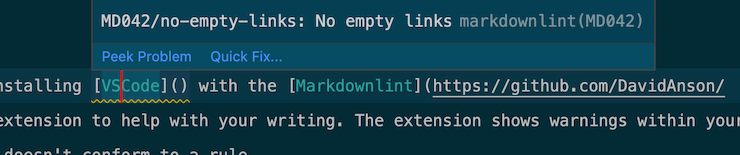
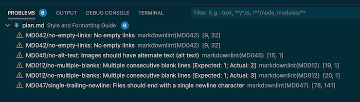

# Grammar, formatting, and style
This page details the syntax and formatting rules for writing IPFS documentation. For more conceptual ideas of writing, check out the writing guide.
# Grammar and spelling
Here are some language-specific rules that the IPFS documentation follows. If you use a writing service like Grammarly, most of these rules are turned on by default.
# American English
While IPFS is a global project, the fact is that American English is the most commonly used style of English used today. With that in mind, when writing content for the IPFS project, use American English spelling. The basic rules for converting other styles of English into American English are:
- Swap the
sfor azin words like categorize and pluralize. - Remove the
ufrom words like color and honor. - Swap
treforterin words like center.
# The Oxford comma
Follow each list of three or more items with a comma ,:
| Use | Don't use |
|---|---|
| One, two, three, and four. | One, two, three and four. |
| Henry, Elizabeth, and George. | Henry, Elizabeth and George. |
# Acronyms
If you have to use an acronym, spell the full phrase first and include the acronym in parentheses () the first time it is used in each document. Exception: This generally isn't necessary for commonly-encountered acronyms like IPFS, unless writing for a stand-alone article that may not be presented alongside docs.ipfs.io.
Virtual Machine (VM), Decentralized Web (DWeb).
# Formatting
How the Markdown syntax looks, and code formatting rules to follow.
# Syntax
The IPFS Docs project follows the GitHub Flavoured Markdown syntax for markdown. This way, all articles display properly within GitHub itself. This gives readers the option to view articles on the docs website or its GitHub repo.
# Rules
We use the rules set out in the VSCode Markdownlint extension. You can import these rules into any text editor like Vim or Sublime. All rules are listed within the Markdownlint repository.
We highly recommend installing VSCode with the Markdownlint extension to help with your writing. The extension shows warnings within your markdown whenever your copy doesn't conform to a rule.

The extension summarizes all the warnings within the open file at the bottom of the editor:

# Style
The following rules explain how we organize and structure our writing. The rules outlined here are in addition to the rules found within the Markdownlinter extension.
# Text
The following rules apply to editing and styling text.
# Titles
All titles follow sentence structure. Only names and places are capitalized, along with the first letter of the title. All other letters are lower-case:
## This is a title ### Only capitalize names and places #### The capital city of France is ParisEvery article starts with a front-matter title and description:
--- title: Example article description: This is a brief description that shows up in link teasers in services like Twitter and Slack. --- ## This is a subtitle Example body text.In the above example
title:serves as a<h1>or#tag. There is only ever one title of this level in each article.Titles do not contain punctuation. If you have a question within your title, rephrase it as a statement:
<!-- This title is wrong. --> ## What is IPFS? <!-- This title is better. --> ## IPFS explained
# Bold text
Double asterisks ** are used to define boldface text. Use bold text when the reader must interact with something displayed as text: buttons, hyperlinks, images with text in them, window names, and icons.
In the **Login** window, enter your email into the **Username** field and click **Sign in**.
# Italics
Underscores _ are used to define italic text. Style the names of things in italics, except input fields or buttons:
Here are some American things:
- The _Spirit of St Louis_.
- The _White House_.
- The United States _Declaration of Independence_.
Try entering them into the **American** field and clicking **Accept**.
Quotes or sections of quoted text are styled in italics and surrounded by double quotes ":
In the wise words of Winnie the Pooh _"People say nothing is impossible, but I do nothing every day."_
# Code blocks
Tag code blocks with the syntax of the core they are presenting:
```javascript
console.log(error);
```
# Command-line examples
Write command-line inputs without any other characters. Precede outputs from the command line with a greater-than sign >. Include an empty line between the input and output of a command-line example:
```bash
ping ipfs.io
> PING ipfs.io (209.94.90.1): 56 data bytes
> 64 bytes from 209.94.90.1: icmp_seq=0 ttl=53 time=15.830 ms
> 64 bytes from 209.94.90.1: icmp_seq=1 ttl=53 time=19.779 ms
> 64 bytes from 209.94.90.1: icmp_seq=2 ttl=53 time=20.778 ms
> 64 bytes from 209.94.90.1: icmp_seq=3 ttl=53 time=20.578 ms
> --- ipfs.io ping statistics ---
> 4 packets transmitted, 4 packets received, 0.0% packet loss
```
Command-line examples can be truncated with three periods ... to remove extraneous information:
```bash
ping ipfs.io
> PING ipfs.io (209.94.90.1): 56 data bytes
> 64 bytes from 209.94.90.1: icmp_seq=0 ttl=53 time=15.830 ms
> ...
> 4 packets transmitted, 4 packets received, 0.0% packet loss
```
# Inline code tags
Surround directories, file names, and version numbers between inline code tags `.
Version `1.2.0` of the program is stored in `~/code/examples`. Open `exporter.exe` to run the program.
# List items
All list items follow sentence structure. Only names and places are capitalized, along with the first letter of the list item. All other letters are lowercase:
- Never leave Nottingham without a sandwich.
- Brian May played guitar for Queen.
- Oranges.
List items end with a period ., or a colon : if the list item has a sub-list:
- Charles Dickens novels:
- Oliver Twist.
- Nicholas Nickelby.
- David Copperfield.
- J.R.R Tolkien non-fiction books:
- The Hobbit.
- Silmarillion.
- Letters from Father Christmas.
# Unordered lists
Use the dash character - for un-numbered list items:
- An apple.
- Three oranges.
- As many lemons as you can carry.
- Half a lime.
# Special characters
Whenever possible, spell out the name of the special character, followed by an example of the character itself within a code block.
Use the dollar sign `$` to enter debug-mode.
# Keyboard shortcuts
When instructing the reader to use a keyboard shortcut, surround individual keys in code tags:
Press `ctrl` + `c` to copy the highlighted text.
The plus symbol + stays outside of the code tags.
# Images
The following rules and guidelines define how to use and store images.
# Alt text
All images contain alt text so that screen-reading programs can describe the image to users with limited sight:

# Storage location
Store images in a folder called images within the same directory as the article the image is presented in. If there are several articles within the same directory, create a new folder within images for each article. For example the article upload-a-photo.md contains the following line:

The directory structure of this article looks like this:
ipfs-desktop/
├── download-the-config.md
├── images
│ └── upload-a-photo
│ └── ipfs-desktop-image-upload-screen.png
└── upload-a-photo.md
There are no images within the download-the-config.md article, so there is no folder within the images directory for that article.
# File names
All file names are lower-case with dashes - between words, including image files:
ipfs-desktop/
├── add-a-user.md
├── enable-debug-mode.md
├── images
│ ├── additional-information-screen.png
│ ├── dark-mode-enabled.png
│ └── user-profile-image.png
├── log-into-the-application.md
└── upload-a-photo.md